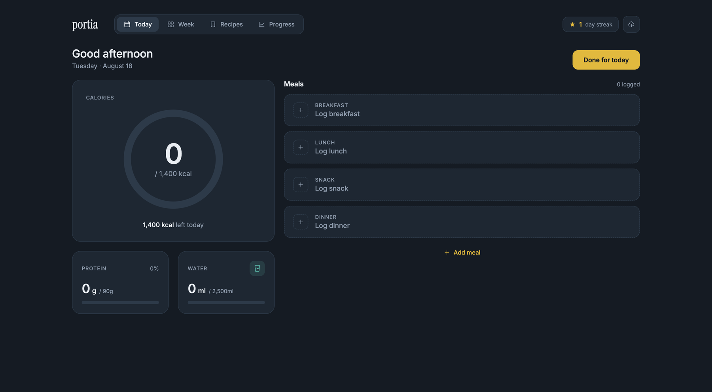
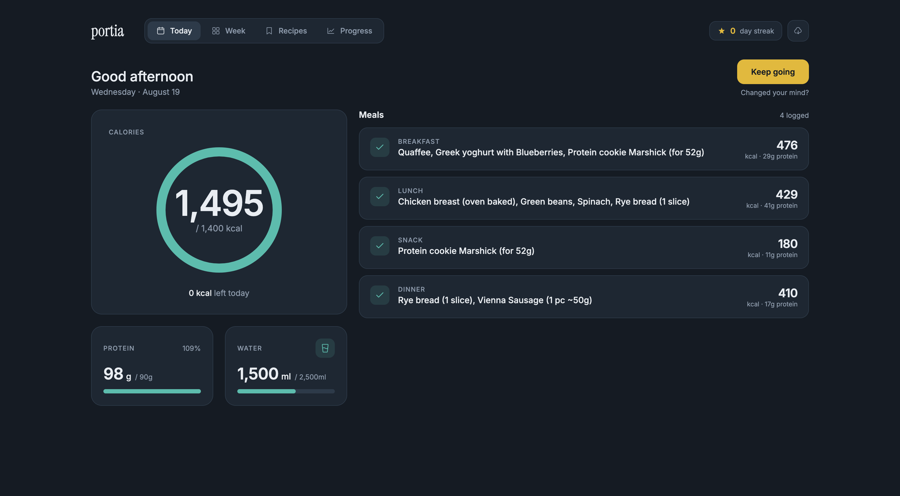
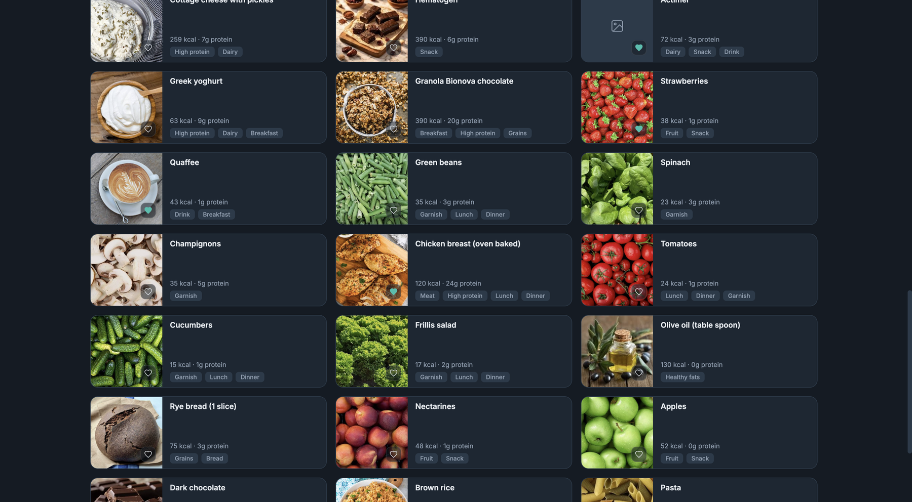
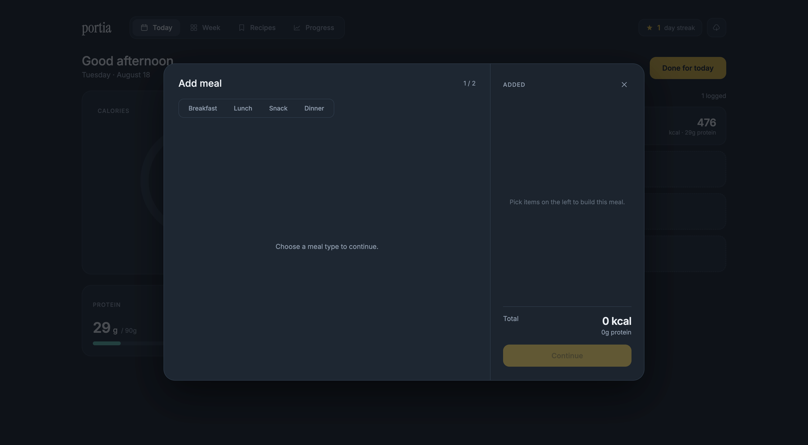
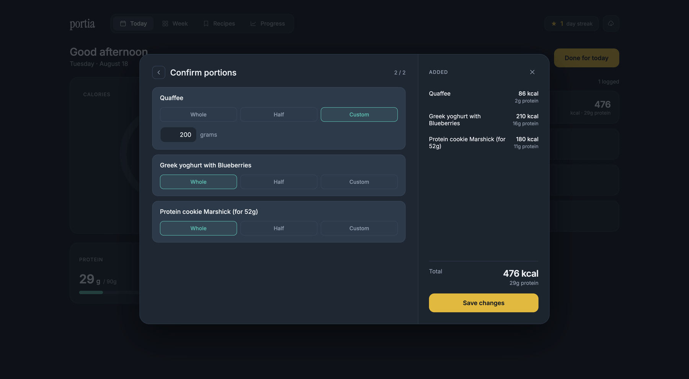
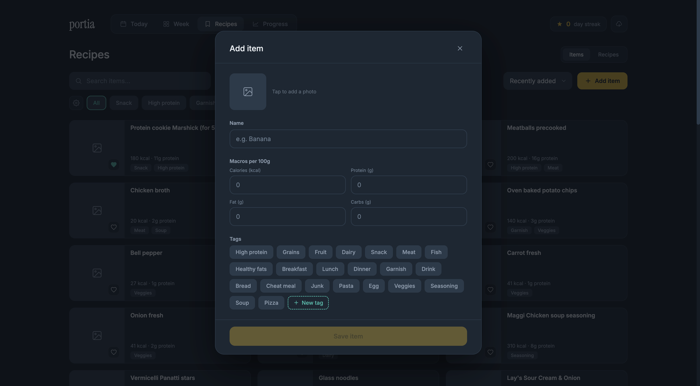
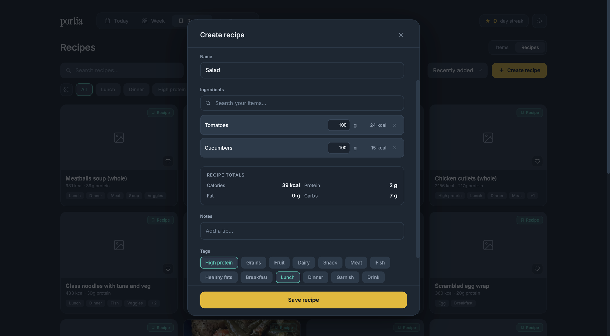
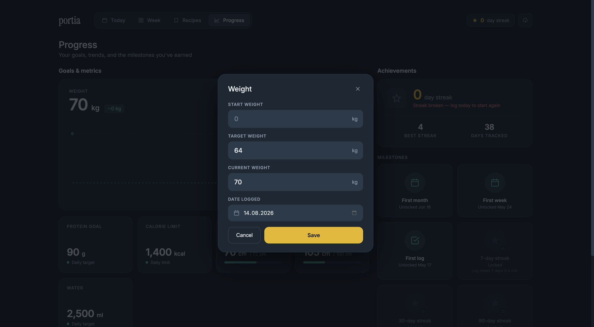

Portia: дневник питания, собранный (почти) без Figma
Соло-проект — веб-приложение для учёта питания, спроектированное в Miro и Claude Design, собранное от и до на Claude Code.
Знакомьтесь: Нина. 35 лет, продуктовый дизайнер, совмещает работу, пет-проекты, уход за двумя огромными собаками и попытки поддерживать быт.
(Это я, привет.)
Некоторое время назад я решила питаться более осознанно — похудеть перед свадьбой и заодно следить за количеством белка.
По традиции завела бумажный дневник питания, но быстро устала вписывать одни и те же блюда и цифры каждый день. Попробовала копипастить в текстовый файл на компьютере — тоже скучно. Скачала одно из известных приложений для подсчёта КБЖУ — и вот тут начались настоящие проблемы:
- многие нужные функции — только по подписке;
- приложение перегружено рекламой и функциями, которые мне не нужны;
- встроенная библиотека продуктов удобна в теории, но на практике путает количеством одинаковых записей: 23 «Помидора», 144 «Ржаных хлеба».
Тогда я вспомнила, что я вообще-то дизайнер — и у меня вообще-то есть подписка на Claude Code. Так появилась идея сделать простой онлайн-дневник питания.
Первый набросок я, по привычке, начала в Figma. Но в процессе поняла, что могу уместить в этот пет-проект «все нужные штуки сразу» — и Figma так и осталась черновиком. Исследование, CJM и структура собрались в Miro, внешний вид — за несколько сессий с Claude Design, а само приложение ожило благодаря Github, Claude Code и Visual Studio. Так появилась Portia.
Portia разделилась на 4 страницы:
- «Сегодня» — записать съеденное и увидеть, сколько калорий и белка осталось «добить»;
- «Неделя» — зайти и похвалить себя за неделю без нарушений плана;
- «Рецепты» — все продукты и рецепты в одном месте;
- «Прогресс» — результаты упорной работы.
Пусто с утра, постепенно заполняется приёмами пищи, и мягкое напоминание — не чувство вины — если вышла за лимит.



Вид на месяц целиком, чтобы один неудачный вторник не перечёркивал хорошую неделю.

Продукты и рецепты живут рядом — записать домашнее блюдо так же быстро, как отсканировать штрихкод.


Цели, метрики и небольшие победы по пути.


Добавить приём пищи → отредактировать (поиск, теги, недавнее) → подтвердить порцию (целая, половина или свой вариант). Три шага, без тупиков.



Отсканировать продукт — и он добавляется с уже заполненными цифрами. Или приложение честно скажет, что пока не знает этот код — без тупикового экрана с ошибкой.
Добавить продукт, создать рецепт (с полем для заметок — «вместо обычного молока взяла овсяное») или поставить цель по весу — всё это в быстрых модальных окнах, без отдельных страниц, на которых можно потерять контекст.



Мобильная версия в MVP урезана до трёх функций: увидеть лимит калорий на сегодня, записать приём еды, добавить новый продукт.
От идеи до MVP и первого дня лога в работающем приложении ушло 4 недели.
Дальнейшие планы разделены на фазы — буду дополнять эту страницу по мере обновлений приложения.
Специально для портфолио я сделала отдельное демо-приложение — можно походить по нему без сохранения ваших данных.


Давайте поговорим.
Пишите, если строите что-то и хотите свежий взгляд опытного дизайнера. Я читаю всё, что приходит.